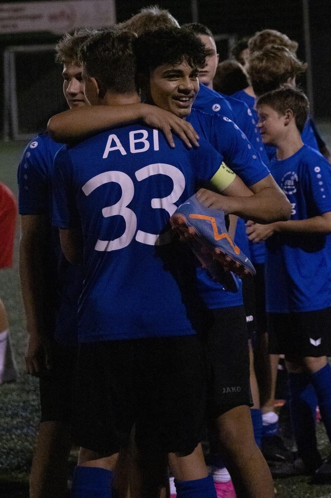

ABI C1-Junioren: Turniersieg!
 Am letzten Ferienfreitag spielten die C1-Junioren ein Vorbereitungsturnier in Steinbach bei Backnang. Das Turnier erwies sich als herausragend organisiert, das für alle beteiligten Mannschaften eine gute Gelegenheit gab, nochmals die aktuelle Form zu testen.
Nach der langen Ferienzeit waren fast alle Jungs an Bord. Ziel war es, mindestens das Halbfinale zu erreichen, damit die Mannschaft 100 min Gesamtspielzeit haben konnte. Dieses Ziel war nach den ersten beiden Vorrundenspielen mit Siegen gegen Murrhardt (4:0) und SV Allmersbach (1:0) schon erreicht. Im letzten Vorrundenspiel gegen die U14 der TSG Backnang tat sich die Mannschaft gegen die quirligen Gegner zunächst sehr schwer und geriet rasch in Rückstand. Mit zunehmender Spieldauer bekamen die ABI-Jungs das Spiel im Griff und konnten noch durch Lenni per Foulelfmeter ausgleichen.
Im Halbfinale gegen den Gruppenzweiten der anderen Vorrundengruppe ließ die Mannschaft nichts anbrennen. Das Ergebnis von 1:0 spiegelte nicht den Spielverlauf wider, denn ABI hatte das Geschehen jederzeit im Griff, der Gegner konnte keine Torchance erspielen. Lediglich die Chancenverwertung hätte deutlich besser sein können.
Im Finale traf man erneut auf die TSG Backnang, die im Halbfinale Sonnenhof Großaspach ausschalten konnte. Dieses Mal waren die ABI-Jungs von Beginn an konzentriert und überlegen. Zwei Tore durch Lenni und Robin brachte einen beruhigenden Vorsprung, der bis zum Spielende souverän verteidigt werden konnte.
Erschöpft und überglücklich konnte die Mannschaft bei der Siegerehrung den Pokal in Empfang nehmen. Mit diesem Erfolgserlebnis starten die ABI-C1-Junioren motiviert in die neue Saison. Das erste Spiel findet am Samstag in Abstatt statt.
Martin Kimmig
Alle weiteren Fotos befinden unter Google Photos.